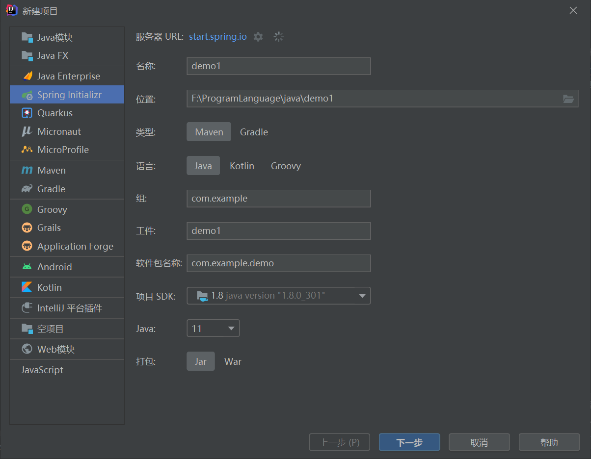

SpringBoot入门
SpringBoot
自动装配
约定大于配置
微服务
是一种架构。打破all-in-one
第一个SpringBoot
- jdk1.8
- maven
- SpringBoot
- IDEA
官方提供快速生成网站，IDEA集成了。
官网创建
IDEA创建

第一个SpringBoot WEB应用
HelloController.java
1 | package top.huii.hellospringboot.controller; |
彩蛋——自定义banner
原理初探
自动配置
pom.xml
- spring-boot-dependencies:核心依赖在父工程中
- 在写或引入一些依赖，不需要指定版本
启动器
1 | <dependency> |
SpringBoot启动场景
会将所有的功能场景变成一个个的启动器
- 我们要使用什么功能，就只需要找到对应的启动器就可以了
主程序
1 | package top.huii.hellospringboot; |
- @SpringBootApplication表明是一个SpringBoot应用
- SpringBoot所有自动配置都是在启动的时候扫描并加载，但不一定生效，要判断条件是否成立，要导入对应的start就有对应的启动器。
配置文件
yaml
不推荐使用properties配置文件，推荐使用yaml
yaml对空格要求极高
1 | student: |
松散绑定：last-name等同于lastName
多环境切换
最外层配置优先级最高
使用yaml还能这样
WEB开发
导入静态资源
在springboot下，可以使用一下方式处理静态资源
- webjars http://127.0.0.1:8080/webjars
- public, static, /**, resources http://127.0.0.1:8080/
- 优先级：resources>static(默认)>public
thymeleaf模板引擎
1 | <dependency> |
1 |
|
语法。。。
常用注解
- @Controller 控制器
- @RequestMapping(value = “/hello”) 设置路由
- @ResponseBody 直接返回字符串
- @RestController 相当于@Controller + @ResponseBody,返回json对象
- @GetMapping(value = “/hello”) 相当于@RequestMapping(value = “/hello”, method=RequestMethod.GET) 只接受GET方法请求。方式不对会报405错误
- @PostMapping(value = “/hello”) 相当于@RequestMapping(value = “/hello”, method=RequestMethod.POST) 只接受POST方法请求。
- @DeleteMapping(value = “/hello”)
- @PutMapping(value = “/hello”)
Restful风格
1 |
|
Redis
1 | <dependency> |
拦截器
1 | public class UserInterceptor implements HandlerInterceptor {} |
本博客所有文章除特别声明外，均采用 CC BY-NC-SA 4.0 许可协议。转载请注明来自 HUII's Blog！
相关推荐


评论